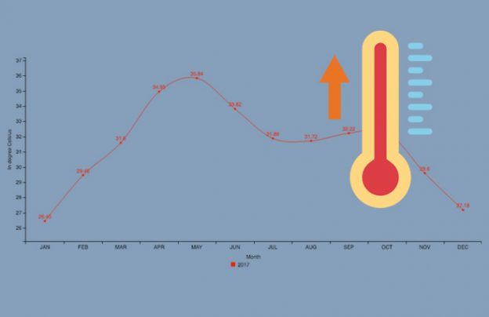
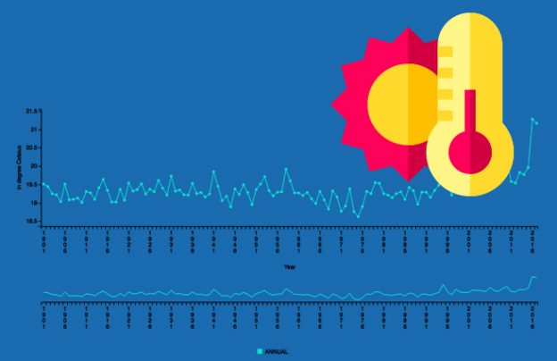

| Home > Temperature > |
|
|  |
Agriculture Data
|
 |
| This time series is based on the surface air temperature (1.2 m above sea level) data from more than 350 stations spread over the country.The time series shows a warming over India during the recent years. |
Released Under: National Data Sharing and Accessibility Policy (NDSAP) Contributor: Ministry of Earth SciencesIndia Meteorological Department (IMD) Group: India Maximum Temperatures Sectors: Atmospheric ScienceScience and Technology Published on Data Portal: 13/02/2014 Source: data.gov.in |